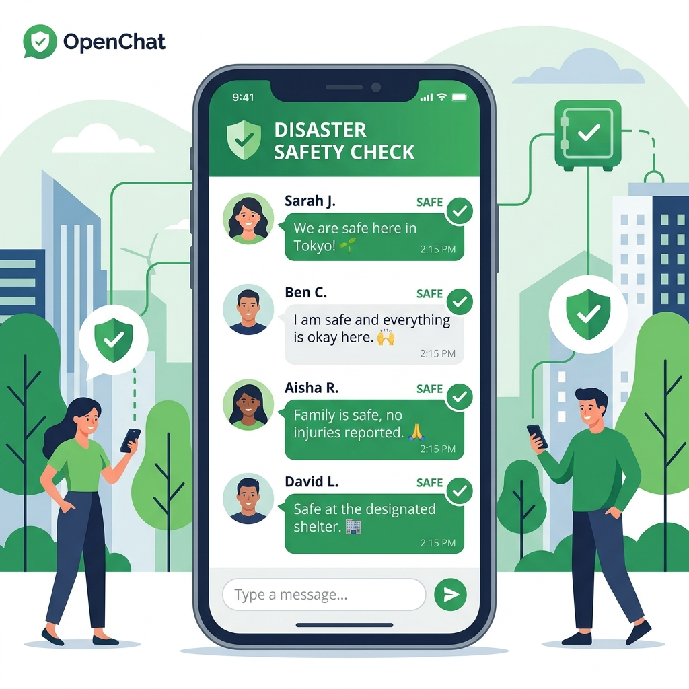

【実録】1000人のオプチャを大雨・地震から守る！安否確認とデマを防ぐリアルな運用ルール

こんにちは！「地震速報/気象情報/交通情報 共有オープンチャット」の管理人です。早いものでこのオプチャを立ち上げて2年が経ち、今ではメンバーも1000人近くまで増えました。
よく「そんなに大人数がいるオプチャ、災害のときにパニックにならないの？」と聞かれます。
結論から言うと、私たちのオプチャは「普段は情報提供のみ（雑談は一切禁止）」、そして災害が起きたときはなんと「副官（共同管理者）しか発言できない」という超ストイックなルールで運営しています！この徹底したルール設計があるからこそ、1000人が集まっても通知の嵐で退会する人がおらず、本当に価値のある情報だけが集まる最強の防災インフラとして機能しているんです。
今回は、実際の失敗からたどり着いた、私たちのオプチャの「リアルな鉄則」を本音で書きます。
ルール①：災害時は「副官しか喋れない」設定に即切り替える！
大地震や大雨の直後、みんなが「揺れた！」「怖い！」「こっちは大丈夫です」と一斉に文字で書き込むと、どうなるでしょうか？
一瞬で通知が100件、200件と爆発し、オプチャは完全に崩壊します。
スマホが震えっぱなしになってメンバーが退会してしまうだけでなく、本当にマズい状況にある地域のSOSや、近所の河川の決壊情報といった「命に関わる緊急メッセージ」が、お見舞いや生存報告のチャットに流されて一瞬で見えなくなってしまいます。
災害が発生したら、管理人はすぐにオプチャの投稿権限を「管理者・共同管理者（副官）のみ」に切り替えます。一般のメンバーは発言できない（読み取り専用）状態になります。
そして、副官がこうアナウンスします。
「【安否確認用】みなさんご無事ですか？大丈夫な方はこのメッセージに『いいね』などのリアクションを押してください！」
発言を制限された一般メンバーは、返信テキストの代わりに、メッセージに対してLINEのリアクション機能（スタンプ）をポンと押します。これなら通知は一切鳴りません！「現在350人無事」と視覚的に一目で集計できますし、通知で誰の迷惑にもなりません。災害時の発言は、裏付けの取れた情報を発信できる「副官のみ」に絞る。これが最強のパニック防止策です。
ルール②：普段も「雑談禁止・情報提供のみ」のストイック運営
「普段から仲良く喋っておいた方が、いざという時話しやすいのでは？」と思うかもしれません。しかし、1000人規模のオプチャでそれをやると、日常のどうでもいい雑談通知に疲れたメンバーがどんどん通知をオフにするか、退会していってしまいます。いざ本物の災害が起きたときに通知が切れていたら、防災オプチャとしての意味がありません。
私たちのオプチャでは、平時も「おはようございます」などの挨拶や雑談は一切禁止です。書き込んでいいのは、以下のような客観的で有益な情報のみとしています。
- 気象情報・鉄道の遅延情報： 「〇〇線、人身事故で運転見合わせの公式発表です（リンク添付）」など。
- 日常の防災グッズ紹介： 「〇〇ショップで優秀な防災アイテム見つけました（写真添付）」など。
「このオプチャは、鳴ったら100%自分に必要な情報が届く」という信頼感があるからこそ、メンバーは通知をオンにしたまま、何ヶ月も在籍し続けてくれるのです。
ルール③：デマは「悪意」じゃなく「親切心」で広がる
災害時に飛び交う「〇〇で火事らしい」「水道が1週間止まるらしい」といったデマ。これを投稿する人は、悪気があるわけではありません。「みんなに早く教えてあげなきゃ！」という超ピュアな善意で拡散しているのが一番厄介な点です。
私たちのオプチャでは、デマの拡散を防ぐために以下のソース（情報源）ルールを徹底しています。
| 情報の種類 | 投稿ルール | 理由 |
|---|---|---|
| 公式の発表 | 必ず一次ソース（自治体HP、気象庁、NHK等のURL）をセットで貼る。 | 情報元がない「噂話」はパニックを招くため。 |
| 地域のリアルタイム状況 | 「〇〇駅前が冠水しています（写真）」など、自分で撮影・確認した確実な一次情報のみ。 | 他人のSNSからの拾い画（AI生成や過去の画像）によるデマを防ぐため。 |
ソースのない噂話や、ルール違反の雑談は、副官メンバーが即座に削除し、コミュニティの情報の質を徹底的にキープしています。
最後に
1000人のコミュニティは、ルール設計を少し工夫するだけで、「通知うるさすぎパニックチャット」から「街で一番信頼できる最強の助け合いインフラ」に変わります。
「災害時は副官のみ発言可能にし、メンバーはリアクションで安否確認」「普段は情報提供のみ」。この2つのストイックなルールを、ぜひあなたのご自身のオプチャでも導入してみてください。驚くほどメンバーのエンゲージメント（定着率）と信頼度が高まりますよ！一緒に備えていきましょう。